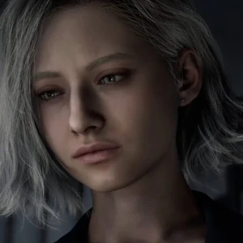
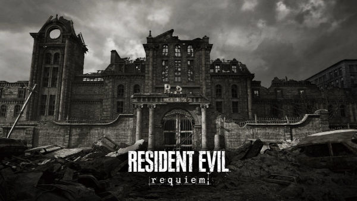
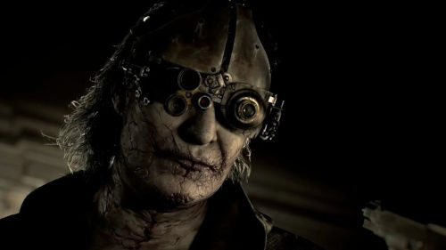

Resident Evil Requiem: O Início de um Novo Pesadelo
Resident Evil Requiem já tem suas primeiras informações confirmadas, incluindo o retorno a Raccoon City, cenário icônico que marcou a história da franquia. Além disso, personagens clássicos como Leon S. Kennedy voltam a ganhar destaque, reacendendo o clima de tensão e sobrevivência que consagrou a série. Com base nas informações mais recentes divulgadas antes do lançamento, tudo indica que o novo título trará uma combinação de nostalgia e inovação, colocando novamente os jogadores no centro de um surto biológico cheio de mistérios e perigos.
Nova protagonista: Grace Ashcroft
Confirmada como a protagonista de Resident Evil Requiem, Grace Ashcroft assume o papel central na nova fase da franquia. Filha de Alyssa Ashcroft, jornalista investigativa ligada aos eventos de Raccoon City, Grace carrega consigo um passado marcado por conspirações e segredos envolvendo a Umbrella. Sua jornada promete explorar não apenas a luta pela sobrevivência em meio a um novo surto biológico, mas também a busca por respostas que podem finalmente revelar verdades ocultas há anos. Com isso, o jogo aposta em uma narrativa mais profunda e conectada com as origens do caos.

Leon s. Kennedy
Entre os nomes mais aguardados, Leon S. Kennedy retorna como uma peça fundamental em Resident Evil Requiem. Marcado pelos acontecimentos de Raccoon City e por diversas missões ao longo dos anos, Leon chega mais experiente, carregando o peso de um passado repleto de perdas e confrontos contra ameaças biológicas. Sua presença no jogo reforça a conexão com os eventos clássicos da franquia, além de indicar que o novo surto pode estar ligado a algo muito maior do que se imagina. Ao lado de Grace Ashcroft, Leon promete ser essencial na luta contra o caos que volta a se espalhar.
Retorno para Raccoon City
Raccoon City retorna como o cenário central de Resident Evil Requiem, trazendo de volta o local onde tudo começou a sair do controle. Marcada pela destruição causada pelo surto do vírus T, a cidade se tornou um símbolo do caos biológico que assombra o mundo até hoje. Mesmo após os eventos devastadores do passado, novos indícios apontam que segredos ainda permanecem escondidos sob suas ruínas. O retorno a Raccoon City não representa apenas nostalgia, mas também a possibilidade de que a origem de uma nova ameaça esteja diretamente ligada aos acontecimentos que nunca foram totalmente esclarecidos.

Uma nova ameaca
Victor surge como uma das figuras mais enigmáticas de Resident Evil Requiem, despertando dúvidas sobre suas verdadeiras intenções. Pouco se sabe sobre seu passado, mas sua presença em meio aos acontecimentos recentes indica uma forte ligação com os novos experimentos biológicos. Frio, calculista e sempre um passo à frente, Victor parece transitar entre aliado e ameaça, tornando difícil prever seu papel na história. Em um cenário marcado por conspirações e segredos, ele pode ser a chave para entender o que realmente está acontecendo — ou o responsável por algo ainda maior.

Esperamos que você tenha gostado deste conteúdo sobre Resident Evil Requiem e das informações reunidas antes de seu lançamento. A franquia continua a evoluir, trazendo novos mistérios, personagens e ameaças que mantêm os fãs sempre atentos. Fique ligado para mais atualizações, teorias e novidades sobre o universo de Resident Evil, enquanto aguardamos o próximo capítulo dessa história cheia de suspense e sobrevivência.